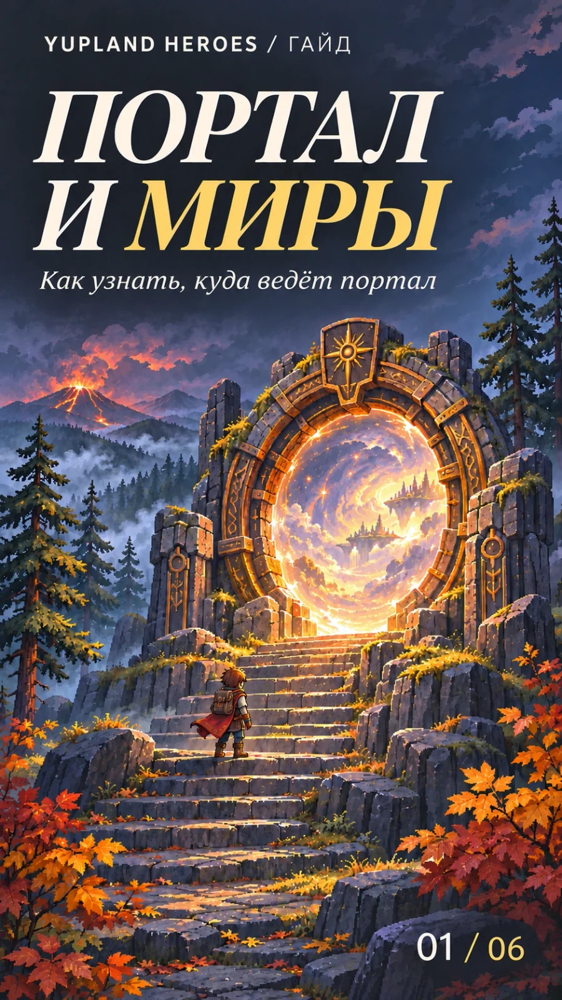
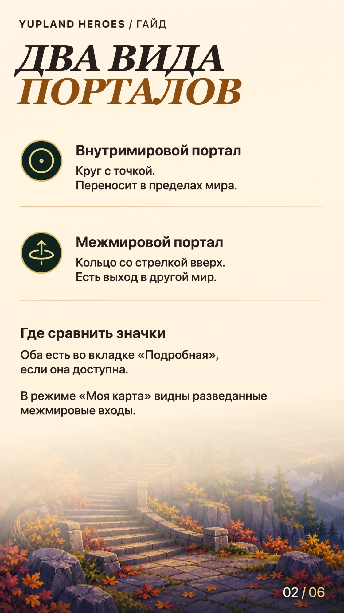
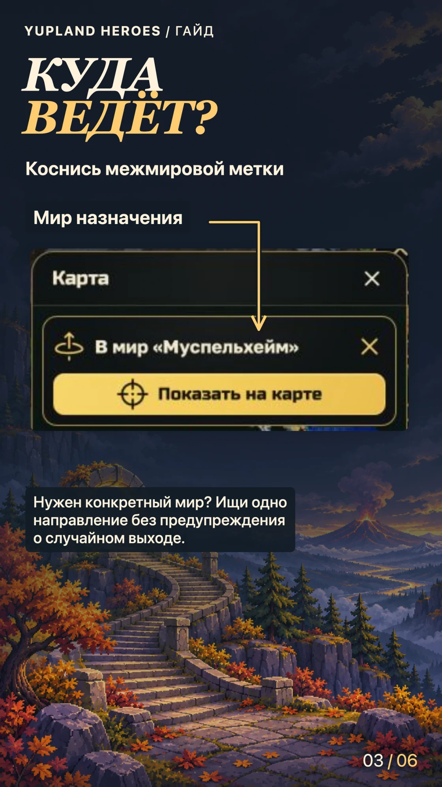
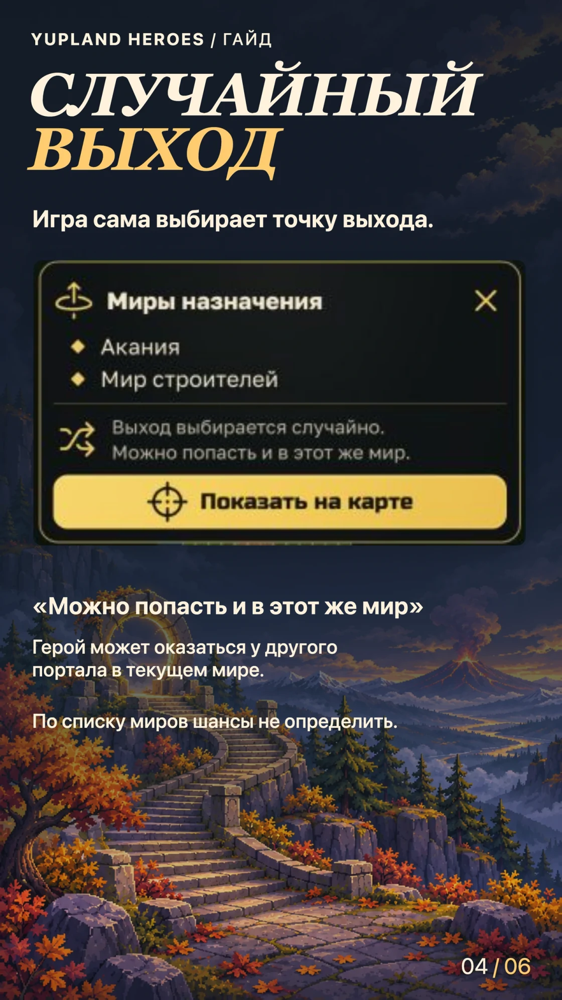
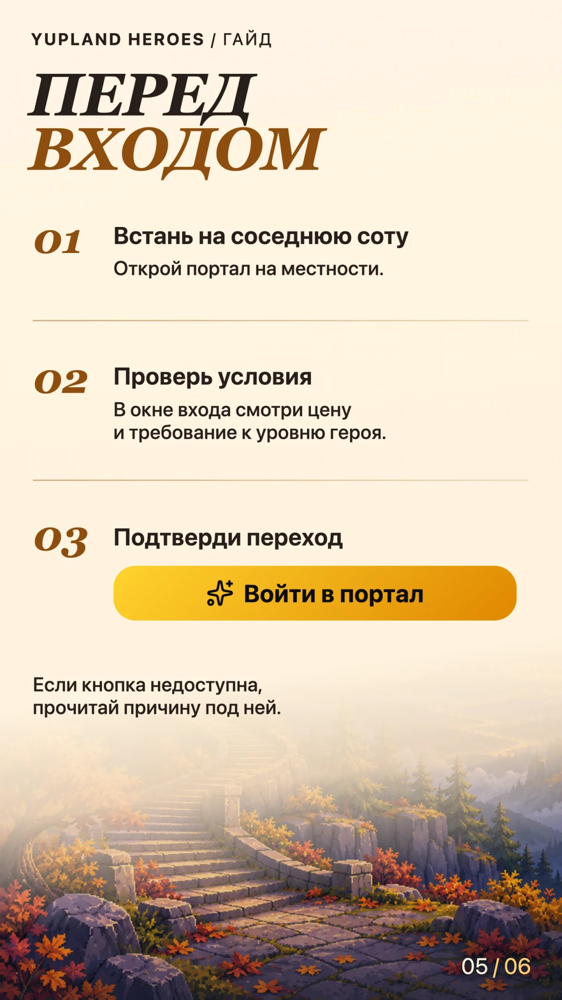
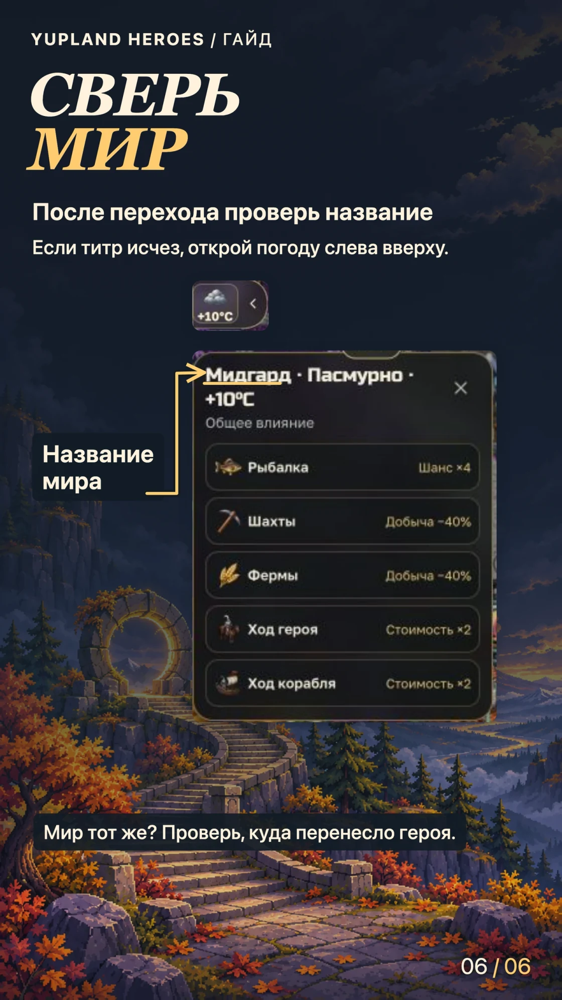

Портал и миры. Как узнать, куда ведёт портал
-
Обложка 
-
Шаг 01 
-
Шаг 02 
-
Шаг 02 · Случайный выход 
-
Шаг 03 
-
Шаг 04 
Различи значки
- Внутримировой портал — круг с точкой в центре. Переносит в другую точку того же мира.
- Межмировой портал — кольцо со стрелкой вверх. Среди его выходов есть другой мир.
Если доступна вкладка «Подробная», сверь значки с легендой под картой. Во вкладке «Моя карта» отмечены разведанные межмировые входы. Во вкладке «Подробная» касание одиночной метки с точкой сразу наводит камеру на вход. У межмирового портала сначала открывается карточка направлений.
Проверь, куда ведёт вход
Коснись кольца со стрелкой. Если тебе нужен конкретный мир, ищи карточку с одним нужным направлением и без предупреждения о случайном выходе. В примере это «В мир „Муспельхейм“».
Если видишь «Выход выбирается случайно», игра сама выбирает точку выхода. В примере это может быть выход в Аканию или в Мир строителей. Строка «Можно попасть и в этот же мир» означает, что герой также может оказаться у другого портала в текущем мире. Мир указывается в списке один раз, даже если в нём несколько выходов, поэтому по списку шансы определить нельзя.
Подойди ко входу и проверь условия
Нажми «Показать на карте», чтобы найти вход на местности. Подведи героя на соседнюю соту и открой портал. Проверь цену и требование к уровню героя, если оно указано. Для перехода нажми «Войти в портал». Если кнопка недоступна, прочитай пояснение под ней.
Сверь, где оказался герой
При смене мира игра показывает его название, если удалось его загрузить. Если титр уже исчез, открой карточку погоды слева вверху, когда она доступна. Название мира будет в заголовке. На снимке показан Мидгард.
Если название осталось прежним, проверь положение героя на карте. Он мог переместиться к другому порталу в том же мире. Если у портала на обратном пути тоже случайный выход, игра снова выберет точку.